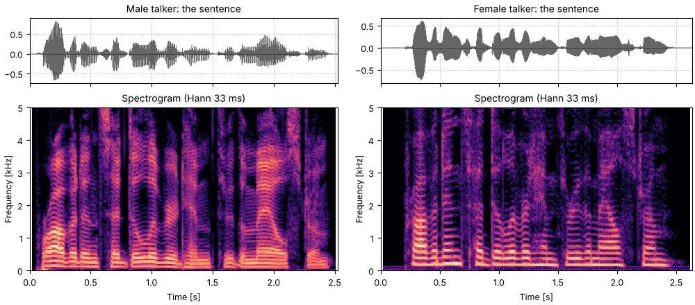

The sentence, read by each talker
The sentence, read by each talker. The words line up closely: the female talker's reading is 0.1 s longer. The female talker's harmonics, the horizontal lines, are visibly farther apart.
Male talker
tk1_the_sentence_read_by_each_talker_male_talker.flac, 2.5 s, mono
Female talker
tk1_the_sentence_read_by_each_talker_female_talker.flac, 2.6 s, mono

Code
sounds = talkers
fig, playhead = show_pair(sounds, "the sentence")